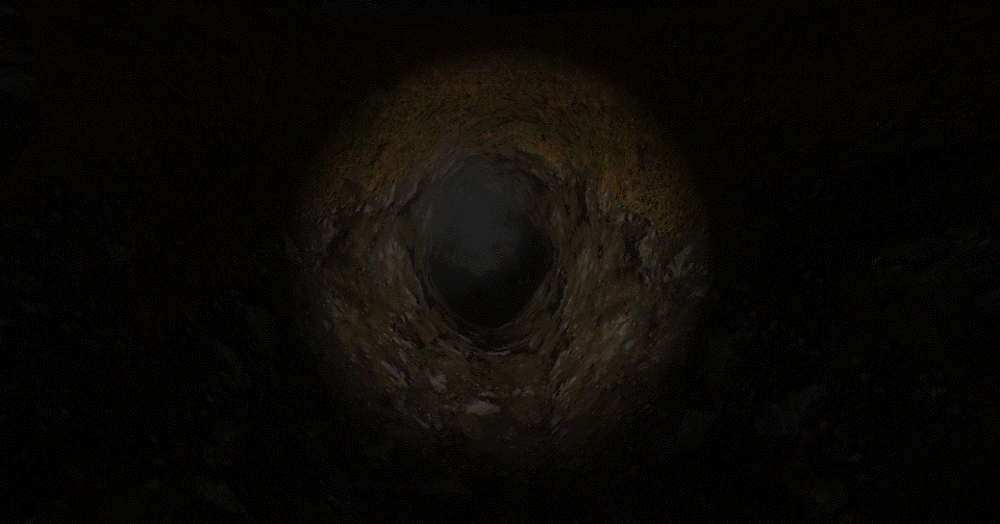
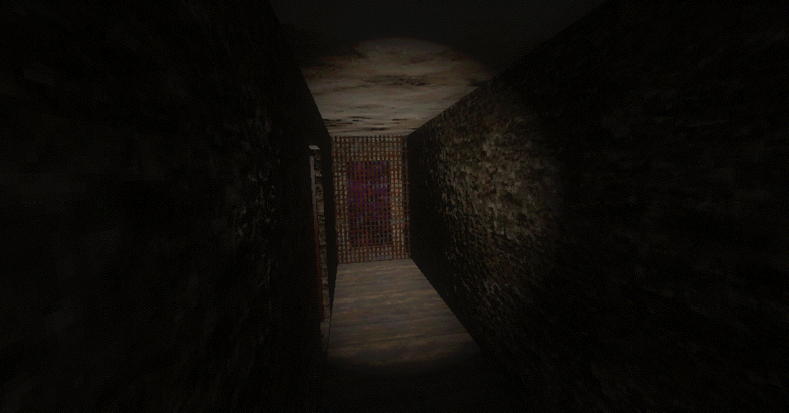
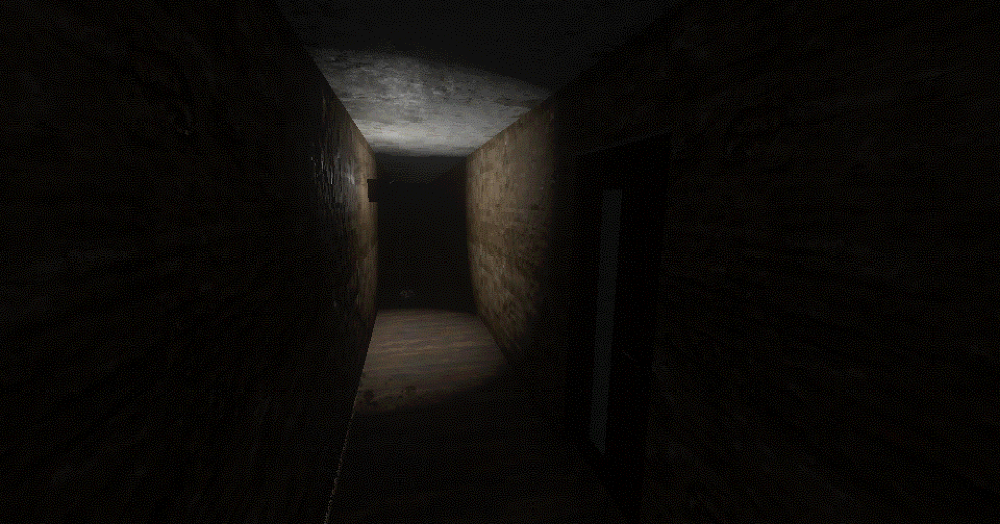
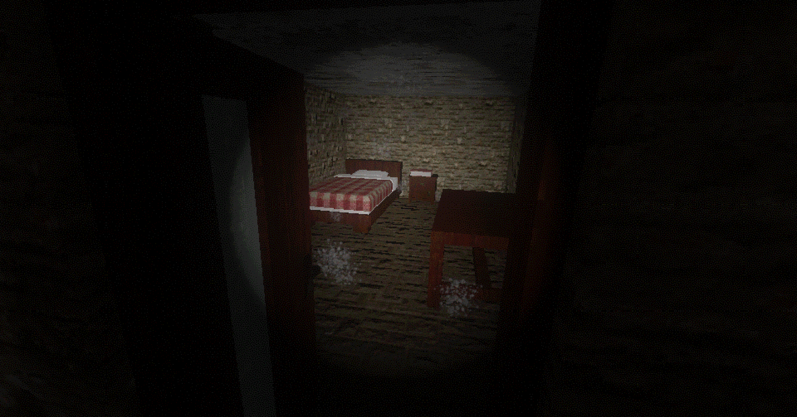
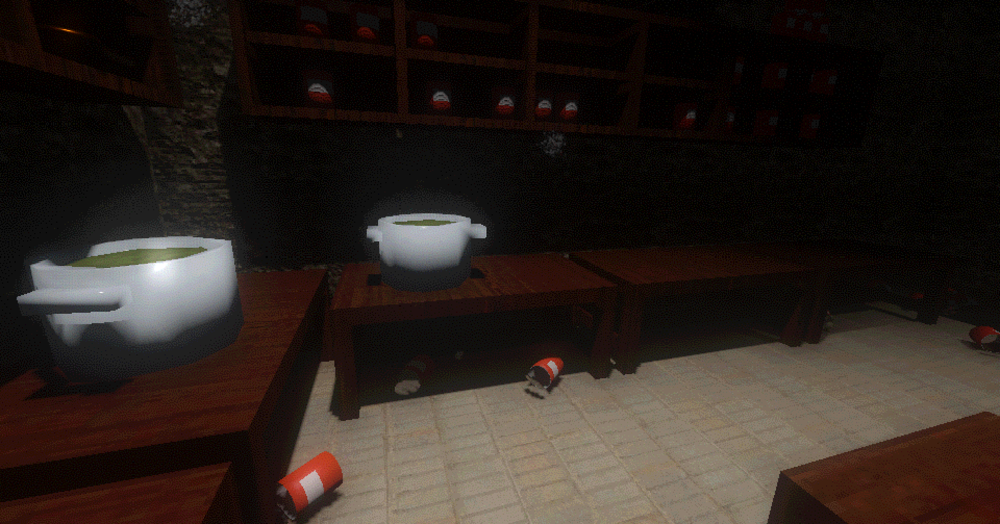
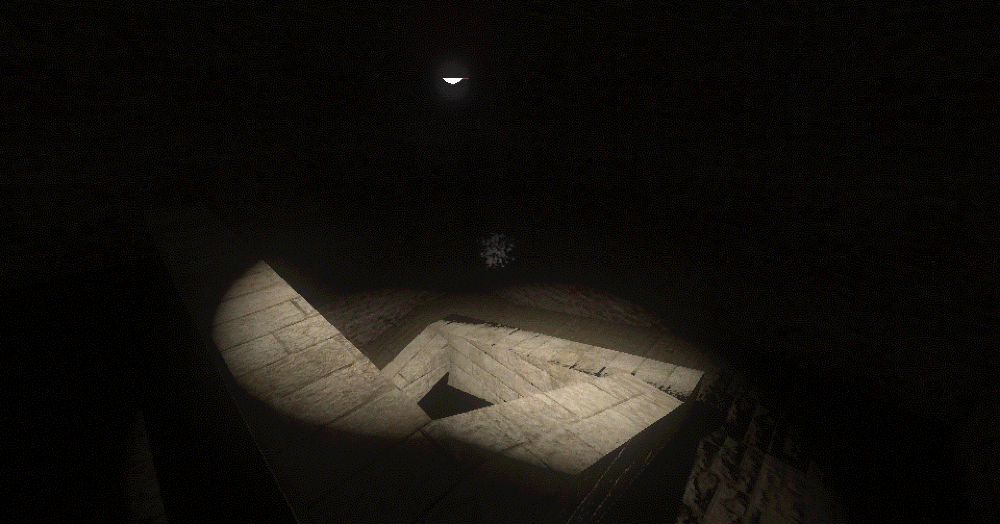
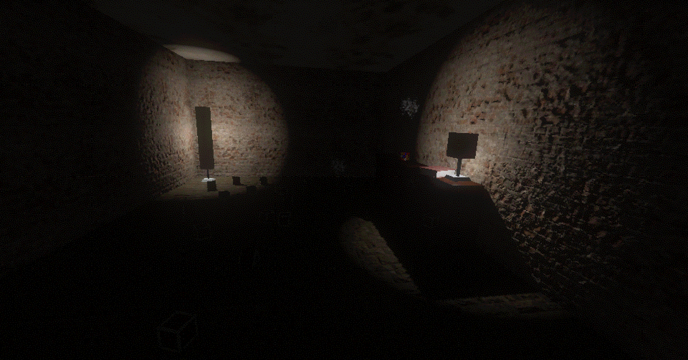
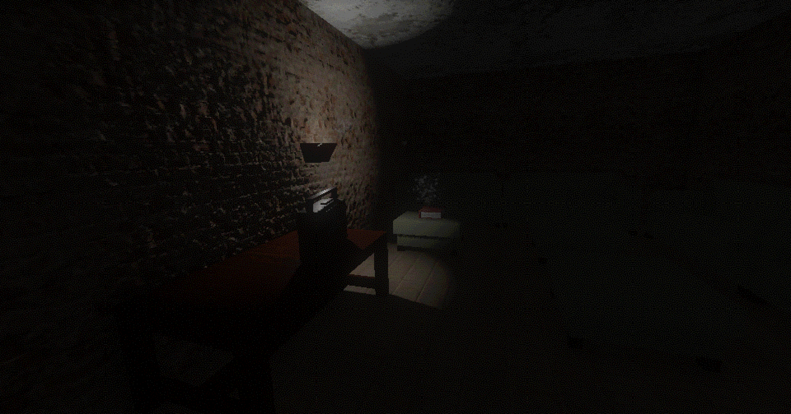

Game Overview
Ascension Of The Lamb is a “Retro PBR” game about exploring a mysterious cult bunker.

Story of the Creation
I participated in the Go Godot Jam 3, which to save you a click is a game jam coordinated by the Godot community, specifically ‘Redefine Gamedev’, who is a fairly active member of the community. The jam was very exciting, with online social events planned for participants and hosted by various well known community members.
I participated in the “Classic” experience, which was the easier of the two. We had roughly 9 days to make the game and were allowed to work on a team. I did end up working alone. But I was still determined to finish this game. I was excited to get working on making horror games. And for this one, I wanted to focus on setting up a proper atmosphere. Which if the feedback I got was honest, I think I succeeded there.
The Theme for the jam was “Evolution” and I wanted to take that into an artistic interpretation of the cultists believing they would “evolve” or rather ascend into a higher form of life. The cult itself was inspired by some of the famous American cults from the 80s and 90s.

Gameplay
The game is essentially a walking simulator. There is a simple physics simulation system that I used to make some simple puzzles and encourage exploration. There are two main “lock and key” puzzles which serve to stop the player and encourage them to explore the area more.

Visual Style - Retro PBR
For this game, I wanted to create a Playstation-similar style. I personally don’t have any nostalgia for the Playstation, but I’ve seen a lot of other small indie horror games using the Playstation style to evoke a nostalgic feeling in the players. I wanted to add my own twist to it so I tweaked the parameters a bit. I kept the texture size of 128x128 and the dithering. But I swapped the standard blocky bayer-matrix dithering for blue noise dithering. I used two noise textures scrolling in different directions across the screen to affect the dithering which gave every surface a almost pulsating effect. Additionally, while I was going for a Retro look, I opted to use PBR textures, specifically albedo, metallic, normal, and roughness.
I got some praise for this visual effect and I’ve taken to calling it “Retro PBR” as a general way to describe Retro-similar visuals that utlize a PBR rendering pipeline.
I did struggle a lot with “shadow acne”. It was quite difficult because this version of Godot had some issues with the 3D rendering. It was generally considered unfit for making 3D games, but I tried anyway.

Overall Reception
The game did fairly well considering how it was made. Feedback ranged but there were a few common notes:
- Writing is very good
- Atmosphere is well set up
- The game lacks action, which makes it less fun to play
- Some players suggested adding jumpscares to make more of a haunted house experience


My comments on the game
I feel that this game was a success for where I was at my experience level for the time. I had some specific goals and I accomplished them. Because I went for an artistic interpretation of the jam theme, it did not do very well. Likewise, I encountered several issues with my workflow such as a lack of experience in Blender, which I used for creating the level geometry, as well as struggling with the 3D capabilities of Godot 3, which uses a fairly outdated OpenGL ES 3 based rendering engine.
I think like many of my projects, this game served as an opportunity for me to learn. The feedback I got for this game really helped me hone my craft and I am incredibly grateful to everyone involved in the jam for helping me grow.

